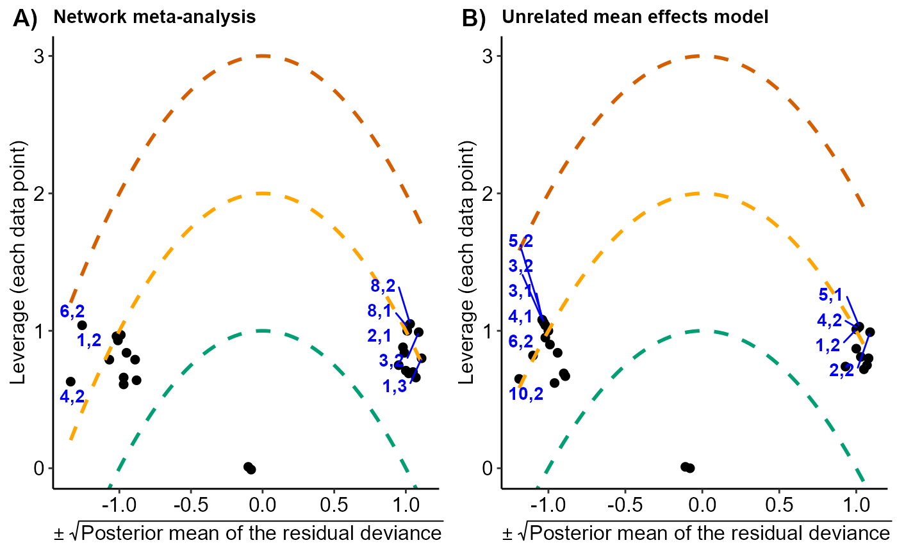
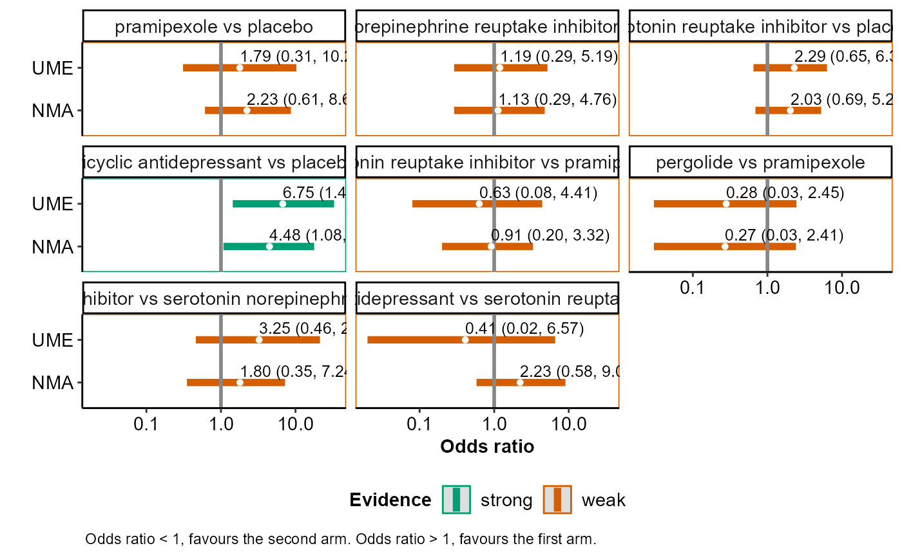

ume_plot hosts a toolkit of functions that facilitates
the comparison of the consistency model (via run_model) with the
unrelated mean effects model (via run_ume) regarding the posterior
summaries of the summary effect size for the pairwise comparisons observed
in the network, the between-trial standard deviation (tau) and model
assessment parameters.
ume_plot(full, ume, drug_names, save_xls)A vector of labels with the name of the interventions in
the order they appear in the argument data of
run_model. If drug_names is not defined,
the order of the interventions as they appear in data is used,
instead.
Logical to indicate whether to export the tabulated results
to an 'xlsx' file (via the write_xlsx
function) to the working directory of the user. The default is FALSE
(do not export).
ume_plot prints on the R console a message on the most
parsimonious model (if any) based on the deviance information criterion
(DIC; in red text). Then, the function returns the following list of
elements:
table_effect_size | The posterior mean, posterior standard deviation, and 95% credible interval of the summary effect size for each pairwise comparison observed in the network under the consistency model and the unrelated mean effects model. |
table_model_assessment | The DIC, number of effective parameters, and total residual deviance under the consistency model and the unrelated mean effects model (Spiegelhalter et al., (2002)). |
table_tau | The posterior median and 95% credible interval of
tau under the consistency model and the unrelated mean effects
model. When a fixed-effect model has been performed, ume_plot does
not return this element. |
scatterplots | The scatterplot and the Bland-Altman plot on the
posterior mean deviance contribution of the individual data points under
the consistency model and the unrelated mean effects model. See 'Details'
and 'Value' in scatterplots_dev and
bland_altman_plot. |
levarage_plots | The leverage plot under the consistency model
and the unrelated mean effects model, separately. See 'Details' and
'Value' in leverage_plot. |
intervalplots | A panel of interval plots on the summary effect
size under the consistency model and the unrelated mean effects model for
each pairwise comparison observed in the network. See 'Details' and
'Value' in intervalplot_panel_ume. |
The DIC of the consistency model is compared with the DIC of the unrelated mean effects model (Dias et al., (2013)). If the difference in DIC exceeds 5, the unrelated mean effects model is preferred; if the difference in DIC is less than -5, the consistency is preferred; otherwise, there is little to choose between the compared models.
Furthermore, ume_plot exports table_effect_size and
table_model_assessment to separate 'xlsx' files (via the
write_xlsx function) to the working directory of the
user.
ume_plot can be used only for a network of interventions. In the
case of two interventions, the execution of the function will be stopped
and an error message will be printed on the R console.
Dias S, Welton NJ, Sutton AJ, Caldwell DM, Lu G, Ades AE. Evidence synthesis for decision making 4: inconsistency in networks of evidence based on randomized controlled trials. Med Decis Making 2013a;33(5):641--56. doi: 10.1177/0272989X12455847
Spiegelhalter DJ, Best NG, Carlin BP, van der Linde A. Bayesian measures of model complexity and fit. J R Stat Soc B 2002;64:583--616. doi: 10.1111/1467-9868.00353
data("nma.liu2013")
# Read results from 'run_model' (using the default arguments)
res <- readRDS(system.file('extdata/res_liu.rds', package = 'rnmamod'))
# Read results from 'run_ume' (using the default arguments)
ume <- readRDS(system.file('extdata/ume_liu.rds', package = 'rnmamod'))
# The names of the interventions in the order they appear in the dataset
interv_names <- c("placebo", "pramipexole", "serotonin-norepinephrine
reuptake inhibitor", "serotonin reuptake inhibitor",
"tricyclic antidepressant", "pergolide")
# Plot the results from both models
ume_plot(full = res,
ume = ume,
drug_names = interv_names)
#> There is little to choose between the two models
#> $table_effect_size
#>
#>
#> |Comparison |Mean NMA |SD NMA |95% CrI NMA |Mean UME |SD UME |95% CrI UME |
#> |:---------------------------------------------------------------------------------------------|:--------|:------|:---------------|:--------|:------|:---------------|
#> |pramipexole vs placebo |2.24 |0.65 |( 0.60, 8.66) |1.81 |0.87 |( 0.30, 11.46) |
#> |serotonin-norepinephrine
#> reuptake inhibitor vs placebo |1.14 |0.69 |( 0.28, 4.68) |1.20 |0.72 |( 0.29, 5.15) |
#> |serotonin reuptake inhibitor vs placebo |1.98 |0.52 |( 0.67, 5.28) |2.25 |0.58 |( 0.64, 6.40) |
#> |tricyclic antidepressant vs placebo |4.48 |0.70 |( 1.07, 17.41)* |6.98 |0.80 |( 1.46, 34.31)* |
#> |serotonin reuptake inhibitor vs pramipexole |0.88 |0.70 |( 0.20, 3.34) |0.64 |0.99 |( 0.08, 4.53) |
#> |pergolide vs pramipexole |0.26 |1.14 |( 0.03, 2.34) |0.26 |1.15 |( 0.02, 2.51) |
#> |serotonin reuptake inhibitor vs serotonin-norepinephrine
#> reuptake inhibitor |1.74 |0.76 |( 0.34, 7.43) |3.21 |0.94 |( 0.45, 20.01) |
#> |tricyclic antidepressant vs serotonin reuptake inhibitor |2.26 |0.70 |( 0.59, 9.42) |0.44 |1.41 |( 0.02, 7.25) |
#>
#> $table_model_assessment
#>
#>
#> | | Full NMA| UME model|
#> |:---|--------:|---------:|
#> |DIC | 43.64857| 43.89305|
#> |pD | 18.95407| 20.11799|
#> |dev | 24.69449| 23.77506|
#>
#> $table_tau
#>
#>
#> | | Median| Lower 95% CrI| Upper 95% CrI|
#> |:---------|---------:|-------------:|-------------:|
#> |Full NMA | 0.5874408| 0.0261822| 1.536555|
#> |UME model | 0.6117732| 0.0319236| 1.668056|
#>
#> $scatterplots
#>
#> $levarage_plots

#>
#> $intervalplots

#>